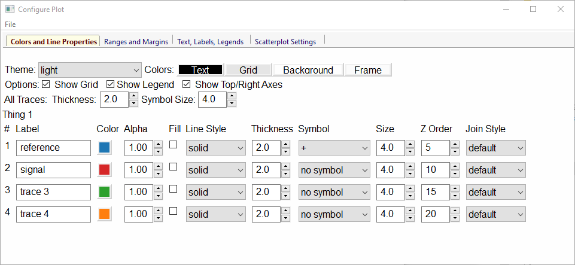
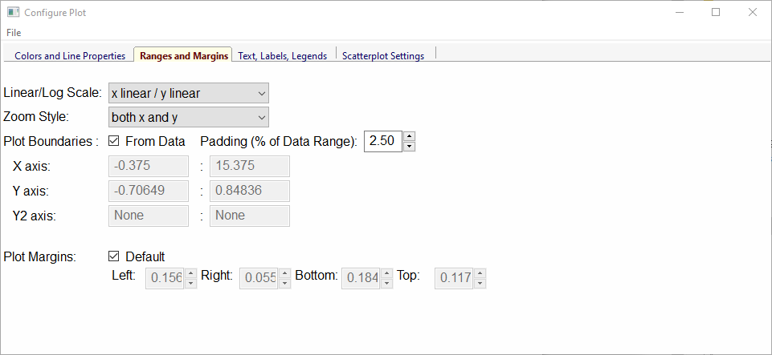
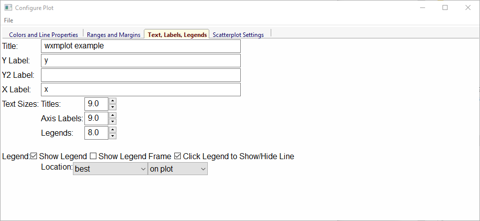

PlotPanel: A wx.Panel for Basic 2D Line Plots¶
The PlotPanel class supports standard 2 dimensional plots,
including line plots and scatter plots. It has both an easy-to-use
programming interface, and a rich graphical user interface for
manipulating the plot after it has been drawn. The PlotPanel
class is derived from a wx.Panel and so that it can be
included anywhere in a wx Window object that a normal wx.Panel
can be put. In addition to drawing a plot, a PlotPanel
provides the following capabilities to the end-user:
- display x, y coordinates as the mouse move.
- display x, y coordinates of last left-click.
- zoom in on a particular region of the plot with left-drag in a lineplot, or draw a ‘lasso’ around selected points in a scatterplot.
- customize titles, labels, legend, colors, linestyles, markers, and whether a grid and a legend is shown. A separate configuration window is displayed to give users control of these settings.
- save high-quality plot images (as PNGs), or copy to system clipboard, or print.
In addition, there is a PlotFrame widget which creates a
stand-alone wx.Frame that contains a PlotPanel, a
wx.StatusBar, and a wx.MenuBar. Both PlotPanel
and PlotFrame classes have the basic plotting methods of
plot() to make a new plot with a single trace, and oplot() to
overplot another trace on top of an existing plot. These each take 2
equal-length numpy arrays (abscissa, ordinate) for each trace, and a host
of optional arguments. The PlotPanel and PlotFrame have
many additional methods to interact with the plots.
-
class
plotpanel.PlotPanel(parent, size=(700, 450), dpi=150, fontsize=9, **kws)¶ Create a Plot Panel, a
wx.Panelwith a matplotlib Figure. This takes many optional arguments:Parameters: - parent – wx parent object.
- size (wx.Size or tuple of 2 integers.) – figure size in wxPython pixel coordinates ((700, 450)).
- dpi (integer) – dots per inch for figure (150).
- axisbg (valid colour name) – background colour for Axis (‘#FEFEFE’).
- fontsize (integer) – font size for wxFont for labels and ticks (9).
- output_title – string to use for output plots (‘plot’).
- messenger (callable or
None) – function to use for writing output messages (None). - trace_color_callback (callable or
None) – function to call when a color changes (None). - show_config_popup (
True/False) – whether to enable a popup-menu on right-click.
The size, and dpi arguments are sent to matplotlib’s
Figure. The messenger should should be a function that accepts text messages from the panel for informational display. The default value is to usesys.stdout.write().The show_config_popup arguments controls whether to bind right-click to showing a poup menu with options to zoom in or out, configure the plot, or save the image to a file.
Keyword parameters in
**kwsother than those listed above are sent to the wx.Panel.
PlotPanel methods¶
-
plotpanel.plot(x, y, **kws)¶ Draw a plot of the numpy arrays x and y, erasing any existing plot. The displayed curve for these data is called a trace. The
plot()method has many optional parameters, all using keyword/value argument. Since most of these are shared with theoplot()method, the full set of parameters is given in Table of Plot Arguments
-
plotpanel.oplot(x, y, **kws)¶ Draw a plot of the numpy arrays x and y, overplotting any existing plot, so that both traces are visible.
The
oplot()method has many optional parameters, as listed in Table of Plot Arguments
Table of Plot Arguments These arguments apply for the plot(), oplot(), and
scatterplot() methods. Except where noted, the arguments are available for plot() and
oplot(). In addition, the scatterplot() method uses many of the same arguments for the
same meaning, as indicated by the right-most column.
argument type default meaning note scatterplot? title string None Plot title 1 yes ylabel string None abscissa label 1 yes y2label string None right-hand abscissa label 1 yes label string None trace label (defaults to ‘trace N’) 1 yes color string blue color to use for trace 2 yes bgcolor string #FEFEFE color for background of Axis (plot area) 2 yes framecolor string white color for frame outside Axis 2 yes gridcolor string #E5E5E5 color for grid lines 2 yes linewidth int 2 linewidth for trace no zorder int 10 depth order of trace (what trace is on top) 3 no style string solid line-style for trace (solid, dashed, …) 4 no drawstyle string line style connecting points of trace 5 no side left/right left side for y-axis and label yes marker string None symbol to show for each point (+, o, ….) 6 no markersize int 8 size of marker shown for each point no legendfontsize int 7 text size for legend yes labelfontsize int 9 text size for Axis labels yes dy array None uncertainties for y values; error bars no xmin float None minimum displayed x value 7 yes xmax float None maximum displayed x value 7 yes ymin float None minimum displayed y value 7 yes ymax float None maximum displayed y value 7 yes viewpad float 2.5 percent past data range to pad data limits 7 yes ylog_scale bool False draw y axis with log(base 10) scale no autoscale bool True whether to automatically set plot limits no fullbox bool True whether to show top and right Axes lines 8 no axes_style string ‘box’ whether to show top, left, right Axes lines 8 no grid None/bool None to show grid lines yes show_legend None/bool None whether to display legend (None: leave as is) no legend_loc string ‘ur’ location of legend 9 no legend_on bool True whether legend is on Axis 9 no delay_draw bool False whether to delay draw until later. 10 no refresh bool True whether to refresh display no use_dates bool False to show dates in xlabel ( plot()only)11 no arguments that apply only for scatterplot()size int 10 size of marker yes edgecolor string black edge color of marker 2 yes selectcolor string red color for selected points 2 yes callback function None user-supplied callback to run on selection yes As a general note, the configuration for the plot (title, labels, grid displays) and for each trace (color, linewidth, …) are preserved for a
PlotPanel. A few specific notes:
- The title, label, and grid arguments to
plot()default toNone, which means to use the previously used value.- All color arguments can be a common color name (“blue”, “red”, “black”, etc), a standard X11 color names (“cadetblue3”, “darkgreen”, etc), or an RGB hex color string of the form “#RRGGBB”.
- zorder is the depth (that is, height above the plane of the screen) to draw the object at. By default, each
oplot()plots at a zorder of 10*(n+1), where n is the counter for the trace. That is, each subsequent trace is drawn over the previous, by defualt.- style is one of (‘solid’, ‘dashed’, ‘short dashed’, ‘long dashed’, ‘dotted’, or ‘dash-dot’)
- drawstyles is one of (
None, ‘steps-pre’, ‘steps-mid’, or ‘steps-post’).Noneconnects points with a straight line between points. The others give horizontal lines with a vertical step at the starting point (‘step-pre’), mid-point (‘step-mid’) the ending point (‘steps-post’). Note that if displaying discrete values as a function of time, left-to-right, and want to show a transition to a new value as a sudden step, you want ‘steps-post’.- marker is one of (‘+’, ‘o’, ‘x’, ‘^’, ‘v’, ‘>’, ‘<’, ‘|’, ‘_’, ‘square’, ‘diamond’, ‘thin diamond’, ‘hexagon’, ‘pentagon’, ‘tripod 1’, or ‘tripod 2’).
- By default, xmin, xmax, ymin, and ymax are set from the data. viewpad gives a percentage of the data range for the view to be extended. That is, with xmin=0, xmin=100, viewpad=5, the range for x will be [-5, 105].
- fullbox can be used to turn on or off the top and right Axes lines (or spines), giving a more open figure. The ‘axes_style’ option gives a little more control – you can set this to either ‘box’ for a complete box, ‘open’ for left and right Axes lines only (same as fullbox=False), or ‘bottom’ which will suppress the top, right, and left Axes.
- legend_loc sets the position of the leggend on the plot, and is one of (‘ur’, ‘ul’, ‘cr’, ‘cl’, ‘lr’ ‘ll’, ‘uc’, ‘lc’, or ‘cc’‘) for (‘upper right’ , ‘upper left’, ‘center right’, ‘center left’, ‘lower right’, ‘lower left’, ‘upper center’, ‘lower center’, or ‘center’).
- The delay_draw option will delay the actual drawing the plot to the screen. This can be give a noticeable speed up when plotting multiple line traces at once. See also
plot_many()for a convenience function to plot many traces at once.- The use_dates option is not very rich, and simply turns x-values that are Unix timestamps into x labels showing the dates.
All of these values, and a few more settings controlling whether and how to display a plot legend can be configured interactively (see Plot Configuration).
-
plotpanel.update_line(trace, x, y, side='left', update_limits=True, draw=False)¶ update an existing trace.
Parameters: - trace – integer index for the trace (0 is the first trace)
- x – array of x values
- y – array of y values
- side – which y axis to use (‘left’ or ‘right’).
- update_limits – whether to force an update of the limits.
- draw – whether to force a redrawing of the canvas.
This function is particularly useful for data that is changing and you wish to update traces from a previous
plot()oroplot()with the new (x, y) data without completely redrawing the entire plot. Using this method is substantially faster than replotting, and should be used for dynamic plots such as a StripChart.
-
plotpanel.plot_many(xylist, side='left', title=None, xlabel=None, ylabel=None, **kws)¶ Plot many x, y datasets at a single time. xylist should be a list or tuple of two-element list or tuple of (x, y) data arrays. Many of the properties listed in Table of Plot Arguments can be specified.
If plotting many datasets, this method can give a significant speed-up over calling
plot()followed by many calls ofoplot(), as that will render the full image after each call, while theplot_many()will delay plotting until all the datasets are ready to be plotted.
-
plotpanel.scatterplot(x, y, **kws)¶ draws a 2d scatterplot. This is a collection of points that are not meant to imply a specific order that can be connected by a continuous line. A full list of arguments are listed in Table of Plot Arguments.
-
plotpanel.clear()¶ Clear the plot.
-
plotpanel.add_text(text, x, y, side='left', rotation=None, ha='left', va='center', family=None, **kws)¶ add text to the plot.
Parameters: - text – text to write
- x – x coordinate for text
- y – y coordinate for text
- side – which axis to use (‘left’ or ‘right’) for coordinates.
- rotation – text rotation: angle in degrees or ‘vertical’ or ‘horizontal’
- ha – horizontal alignment (‘left’, ‘center’, ‘right’)
- va – vertical alignment (‘top’, ‘center’, ‘bottom’, ‘baseline’)
- family – name of font family (‘serif’, ‘sans-serif’, etc)
-
plotpanel.add_arrow(x1, y1, x2, y2, side='left', shape='full', color='black', wdith=0.01, head_width=0.03, overhang=0)¶ draw arrow from (x1, y1) to (x2, y2).
Parameters: - x1 – starting x coordinate
- y1 – starting y coordinate
- x2 – endnig x coordinate
- y2 – ending y coordinate
- side – which axis to use (‘left’ or ‘right’) for coordinates.
- shape – arrow head shape (‘full’, ‘left’, ‘right’)
- color – arrow fill color (‘black’)
- width – width of arrow line (in points. default=0.01)
- head_width – width of arrow head (in points. default=0.1)
- overhang – amount the arrow is swept back (in points. default=0)
-
plotpanel.set_xylims(limits[, axes=None[, side=None]])¶ Set the x and y limits for a plot based on a 2x2 list.
Parameters: - limits (a 4-element list: [xmin, xmax, ymin, ymax]) – x and y limits
- axes – instance of matplotlib axes to use (i.e, for right or left side y axes)
- side – set to ‘right’ to get right-hand axes.
-
plotpanel.get_xylims()¶ return current x, y limits.
-
plotpanel.unzoom()¶ unzoom the plot. The x, y limits for interactive zooms are stored, and this function unzooms one level.
-
plotpanel.unzoom_all()¶ unzoom the plot to the full data range.
-
plotpanel.set_title(title)¶ set the plot title.
-
plotpanel.set_xlabel(label)¶ set the label for the ordinate axis.
-
plotpanel.set_ylabel(label)¶ set the label for the left-hand abscissa axis.
-
plotpanel.set_y2label(label)¶ set the label for the right-hand abscissa axis.
-
plotpanel.set_bgcol(color)¶ set the background color for the PlotPanel.
-
plotpanel.write_message(message)¶ write a message to the messenger. For a
PlotPanelembedded in aPlotFrame, this will go the the Status Bar.
-
plotpanel.save_figure()¶ shows a File Dialog to save a PNG image of the current plot.
-
plotpanel.configure()¶ show plot configuration window for customizing plot.
-
plotpanel.reset_config()¶ reset the configuration to default settings.
PlotFrame: a wx.Frame showing a PlotPanel¶
A PlotFrame is a wx.Frame – a separate window – that
contains a PlotPanel and is decorated with a status bar and
menubar. A PlotFrame inherits many of the methods of a
PlotPanel, and simply passes the arguments along to the
corresponding methods of the PlotPanel. The statusbar will
display live coordintes as the mouse moves on the plot. The built-in
menus include methods for saving, printing and copying an image of the
plot to the system Clipboard, as well as ways to configure many of the
plot attributes.
-
class
plotframe.PlotFrame(parent[, size=(700, 450)[, title=None[, **kws]]])¶ create a plot frame. This frame will have a
panelmember holding the underlyingPlotPanel, and have menus and statusbar for plot interaction.
-
plotframe.plot(x, y, **kws)¶ Passed to panel.plot
-
plotframe.oplot(x, y, **kws)¶ Passed to panel.oplot
-
plotframe.scatterplot(x, y, **kws)¶ Passed to panel.scatterplot
-
plotframe.clear()¶ Passed to panel.clear
-
plotframe.update_trace(x, y, **kws)¶ Passed to panel.update_trace
-
plotframe.reset_config(x, y, **kws)¶ Passed to panel.reset_config
PlotApp: a wx.App showing a PlotFrame¶
A PlotApp is a wx.App – an application – that consists of a
PlotFrame. This show a frame that is decorated with a status bar
and menubar with menu items for saving, printing and configuring plots.
Examples and Screenshots¶
Here, a few examples and screenshots of the output of those examples are shown.
Basic Example¶
A basic plot can be made using a PlotApp and a simple script like this:
#!/usr/bin/env python
# simple wxmplot example
from numpy import linspace, sin, cos, random
from wxmplot import PlotApp
app = PlotApp()
random.seed(1)
x = linspace(0.0, 15.0, 151)
y = 5*sin(4*x)/(x*x+6)
z = cos(0.7*(x+0.3)) + random.normal(size=len(x), scale=0.11)
app.plot(x, y, title='WXMPlot example',
label='decaying sine',
ylabel=r'$\phi(x)$',
xlabel=r'$x \> \rm (\AA)$')
app.oplot(x, z, label='noisy cosine', marker='+', show_legend=True)
app.write_message('Try Help->Quick Reference')
app.run()
This gives a window with a plot that looks like this:

User Interaction¶
The plot image shown above supports zooming with a box: Pressing down the left mouse button and dragging will draw a rectangular box, and releasing the mouse button will zoom in to that rectangle. This can be repeated multiple time. Typing “Ctrl-Z” (or “Apple-Z” for Mac OS X) will zoom out to the previous zoom level, or show the full plot.
From the File menu, the user can save an image of the plot, copy that image to system clipboard, or setup and preview printing. The data in the plot can also be exported to an ASCII column file. The Options menu allows the user to configure the plot, toggle the display of the legend and grid, and zoom out to the full plot range.
The configuration window (Options->Configuration or Ctrl-K) is a tabbed window, with sections for configuring Colors and Line Properties, Text, Labels, and Legend, and Scatterplot.
{kind=link}
The Colors and Line Properties tab allows the user to configure the basic colors for the plot, toggling the display of the grid lines and upper and right axes, and setting of the main properties for each trace. The label, color, line style, line width, symbol to use for a marker, marker size, z-order, and join style for each trace drawn can be customized.
{kind=link}
The Ranges and Margins tab allows the user to change between Linear and Log scale for both X and Y axes, explicitly set the X and/or data ranges displayed, and allow precise control of the margins around the plot.
{kind=link}
The Text and Labels tab allows the user to set the title and labels for the X and Y axes, and to adjust the fontsize for these text and the text shown in the plot legend. The legend can also be customized: whether it is shown, it’s location, and whether the legend entries can be clicked on to toggle the display of the corresponding line. The experimental “Draggable Legend” option allows the user to drag the legend on the plot to fine-tune its placement.

The Scatterplot tab allows the user to set the colors and marker sizes for scatter plots.
Scatterplot Example¶
An example scatterplot can be produced with a script like this:
#!/usr/bin/python
#
# scatterplot example, with lassoing and
# a user-level lasso-callback
import sys
import wx
import wxmplot
import numpy
x = numpy.arange(100)/20.0 + numpy.random.random(size=100)
y = numpy.random.random(size=len(x))
def onlasso(data=None, selected=None, mask=None):
print( ':: lasso ', selected)
app = wx.App()
pframe = wxmplot.PlotFrame()
pframe.scatterplot(x, y, title='Scatter Plot', size=15,
xlabel='$ x\, \mathrm{(\AA)}$',
ylabel='$ y\, \mathrm{(\AA^{-1})}$')
pframe.panel.lasso_callback = onlasso
pframe.write_message('WXMPlot PlotFrame example: Try Help->Quick Reference')
pframe.Show()
#
app.MainLoop()
and gives a plot (after having selected by “lasso”ing) that looks like this:

Using Left and Right Axes¶
An example using both right and left axes with different scales can be created with:
#!/usr/bin/python
#
# example plot with left and right axes with different scales
import sys
import wx
import numpy as np
import wxmplot
noise = np.random.normal
n = 201
x = np.linspace(0, 100, n)
y1 = np.sin(x/3.4)/(0.2*x+2) + noise(size=n, scale=0.1)
y2 = 92 + 65*np.cos(x/16.) * np.exp(-x*x/7e3) + noise(size=n, scale=0.3)
app = wx.App()
pframe = wxmplot.PlotFrame()
pframe.plot(x, y1, title='Test 2 Axes with different y scales',
xlabel='x (mm)', ylabel='y1', ymin=-0.75, ymax=0.75)
pframe.oplot(x, y2, y2label='y2', side='right', ymin=0)
pframe.Show()
app.MainLoop()
and gives a plot that looks like this:

More Examples¶
These and several other examples are given in the examples directory in the source distribution kit. The demo.py script there will show several 2D Plot panel examples, including a plot which uses a timer to simulate a dynamic plot, updating the plot as fast as it can - typically 10 to 30 times per second, depending on your machine. The stripchart.py example script also shows a dynamic, time-based plot.